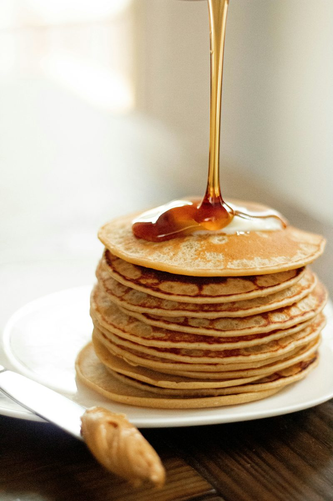

Pancakes Recipe
Prep:10 min|Cook:10 min|Serves:4

Ingredients
- 2 cups all purpose flour
- 2 tbsp sugar
- 2 tsp baking powder
- 2 tsp salt
- 1 1/2 cups milk
- 2 eggs
- 3 tbsp melted butter
- 1 tsp vanilla extract
Steps
- Mix the flour,sugar,baking powder and salt in a bowl
- In another bowl,whisk the milk,eggs,butter and vanilla.
-
Pour the wet mix into the dry mix and stir until just combined.A few
lumps are fine
- Heat a tightly oiled pan on medium heat.
- Pour 1/4 cup of batter per pancake
-
Cook until bubbles form on top,then flip and cook 1 to 2 minutes more
- Serve with honey, syrup or fruit
Tip:Do not overmix the batter,or the pancakes turn out flat